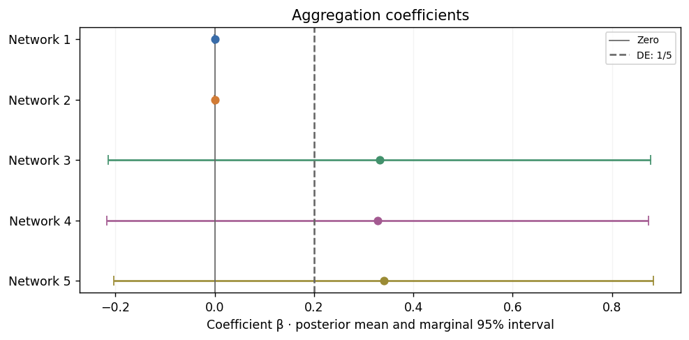
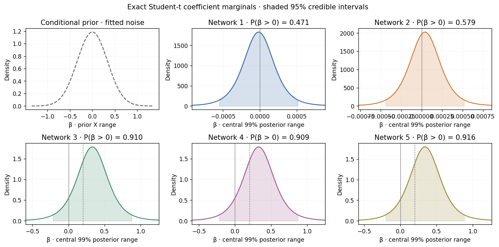
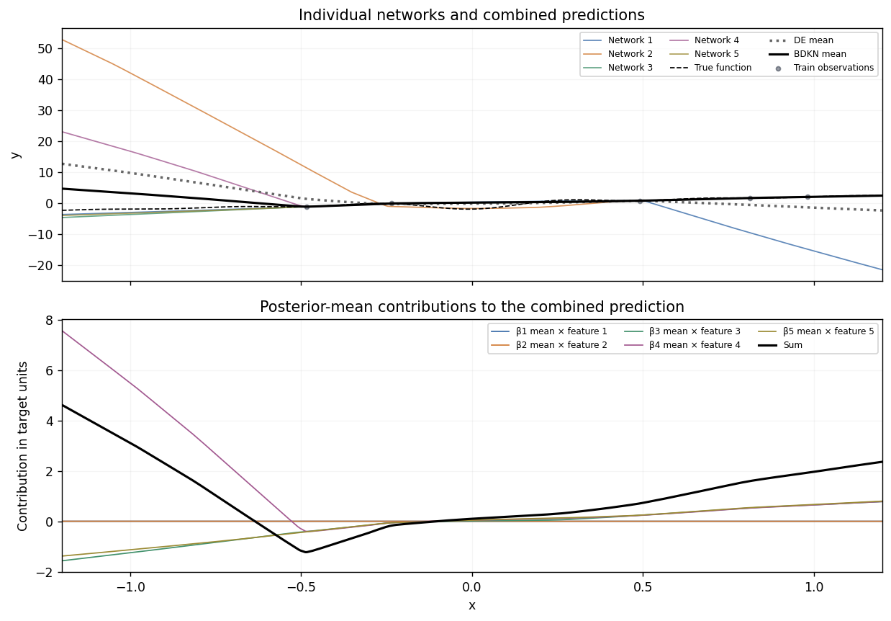
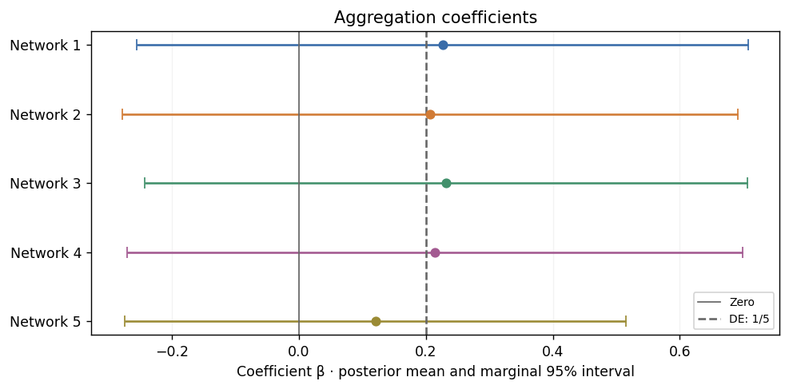
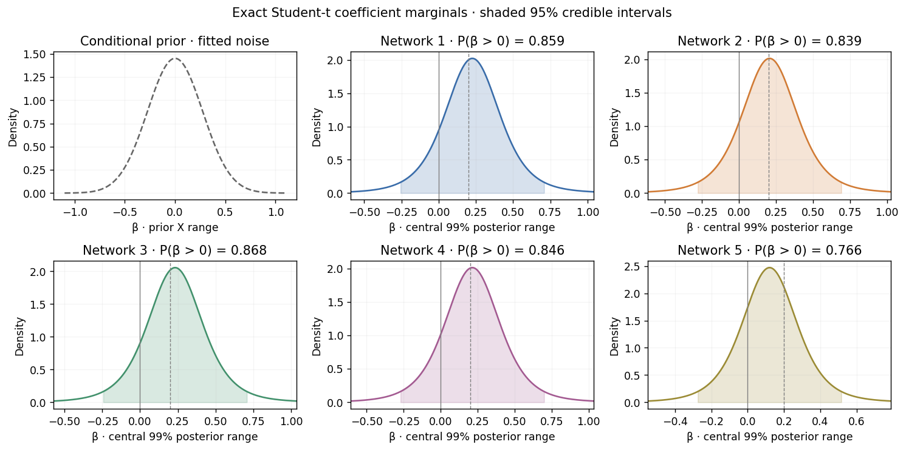
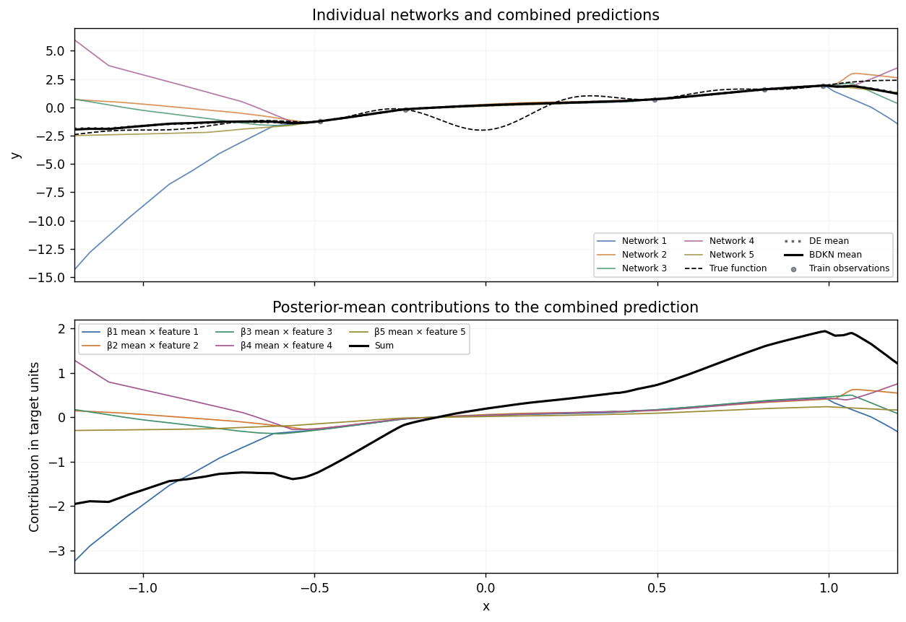
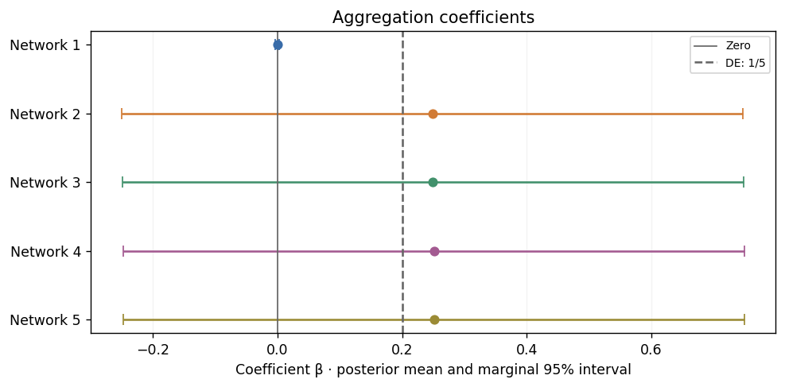
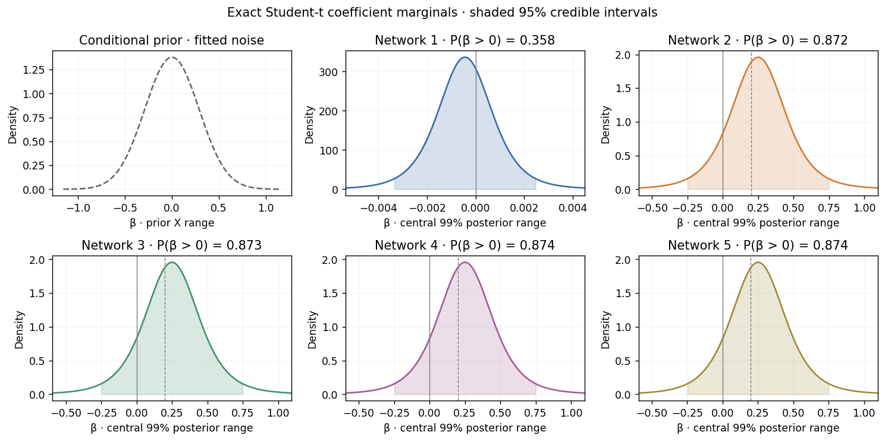
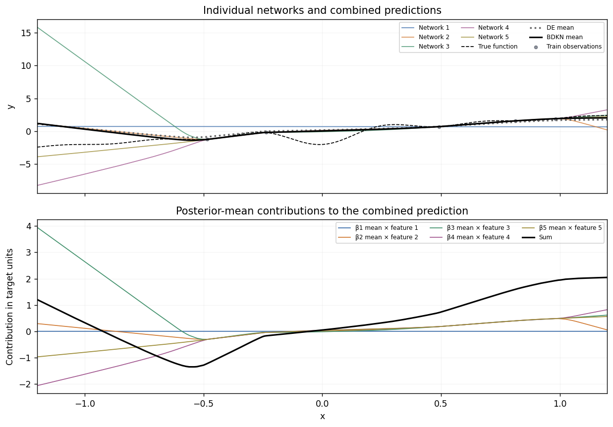

Regression comparison
Download resultsAggregation weights
Coefficients can be negative and need not sum to one. Intervals describe coefficient uncertainty; the dashed reference is DE’s fixed 1/H weight.
BDKN


Each density panel uses its own X range for readability; coefficient intervals above share a common axis. Prior reference conditions on fitted noise. Contribution shares use held-out inputs; test targets are used only for scoring.
| Network | β mean | 95% low | 95% high | P(β > 0) | Contribution share | Test RMSE | Test NLL |
|---|---|---|---|---|---|---|---|
| 1 | 0.18378 | -0.28768 | 0.65525 | 0.81884 | 0.18558 | 0.77438 | 14831.39553 |
| 2 | 0.21712 | -0.25401 | 0.68825 | 0.85530 | 0.21236 | 0.72161 | 5870.93193 |
| 3 | 0.18694 | -0.26881 | 0.64268 | 0.83002 | 0.18791 | 0.77327 | 3837.63935 |
| 4 | 0.21394 | -0.25925 | 0.68713 | 0.85120 | 0.21803 | 0.78641 | 25124.08623 |
| 5 | 0.19829 | -0.25603 | 0.65261 | 0.84357 | 0.19610 | 0.73920 | 2290.88784 |
Functional repulsion · BDKN



Each density panel uses its own X range for readability; coefficient intervals above share a common axis. Prior reference conditions on fitted noise. Contribution shares use held-out inputs; test targets are used only for scoring.
| Network | β mean | 95% low | 95% high | P(β > 0) | Contribution share | Test RMSE | Test NLL |
|---|---|---|---|---|---|---|---|
| 1 | -0.00002 | -0.00055 | 0.00052 | 0.47094 | 0.00003 | 7.88910 | 51158.89651 |
| 2 | 0.00004 | -0.00044 | 0.00052 | 0.57930 | 0.00019 | 19.27269 | 4401.97762 |
| 3 | 0.33174 | -0.21461 | 0.87809 | 0.91035 | 0.22121 | 0.97134 | 122327.53936 |
| 4 | 0.32835 | -0.21697 | 0.87367 | 0.90883 | 0.55912 | 7.77783 | 533440.79178 |
| 5 | 0.33998 | -0.20375 | 0.88371 | 0.91555 | 0.21945 | 0.85667 | 28963.30272 |
Weight repulsion · BDKN



Each density panel uses its own X range for readability; coefficient intervals above share a common axis. Prior reference conditions on fitted noise. Contribution shares use held-out inputs; test targets are used only for scoring.
| Network | β mean | 95% low | 95% high | P(β > 0) | Contribution share | Test RMSE | Test NLL |
|---|---|---|---|---|---|---|---|
| 1 | 0.22632 | -0.25542 | 0.70807 | 0.85941 | 0.38317 | 3.07867 | 41255.05218 |
| 2 | 0.20690 | -0.27747 | 0.69127 | 0.83888 | 0.14260 | 1.14796 | 68404.17401 |
| 3 | 0.23194 | -0.24254 | 0.70642 | 0.86779 | 0.15620 | 1.02884 | 23466.66445 |
| 4 | 0.21412 | -0.27086 | 0.69910 | 0.84607 | 0.20671 | 2.20385 | 1440.64695 |
| 5 | 0.12071 | -0.27396 | 0.51538 | 0.76632 | 0.11132 | 0.69576 | 437.82677 |
First-order repulsion · BDKN



Each density panel uses its own X range for readability; coefficient intervals above share a common axis. Prior reference conditions on fitted noise. Contribution shares use held-out inputs; test targets are used only for scoring.
| Network | β mean | 95% low | 95% high | P(β > 0) | Contribution share | Test RMSE | Test NLL |
|---|---|---|---|---|---|---|---|
| 1 | -0.00043 | -0.00333 | 0.00247 | 0.35792 | 0.00018 | 1.71706 | 608.26573 |
| 2 | 0.24863 | -0.24960 | 0.74686 | 0.87209 | 0.11240 | 1.21626 | 4900.60775 |
| 3 | 0.24943 | -0.24910 | 0.74795 | 0.87263 | 0.36973 | 5.24578 | 26772.19518 |
| 4 | 0.25099 | -0.24738 | 0.74936 | 0.87399 | 0.31081 | 2.02834 | 727740.30556 |
| 5 | 0.25101 | -0.24748 | 0.74949 | 0.87396 | 0.20689 | 0.82009 | 15446.74508 |